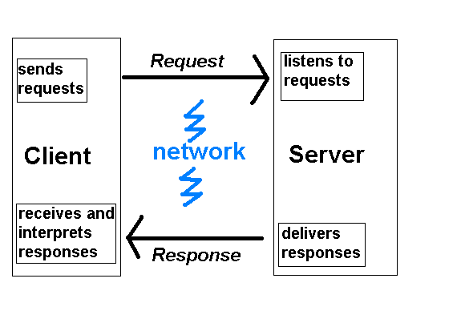
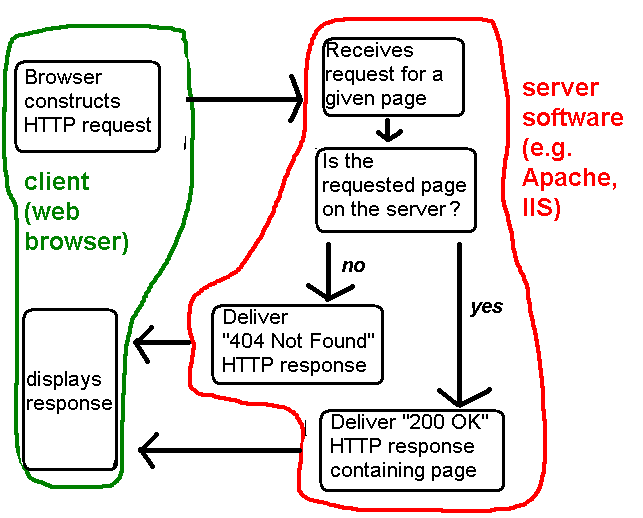
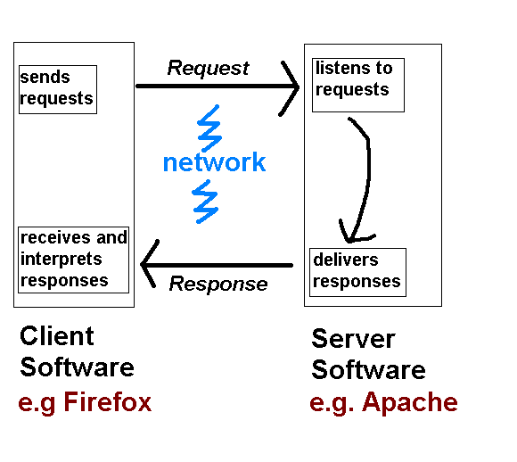
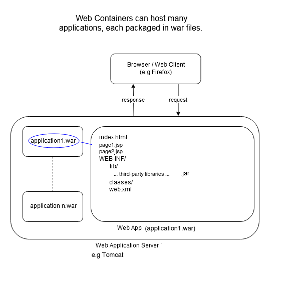
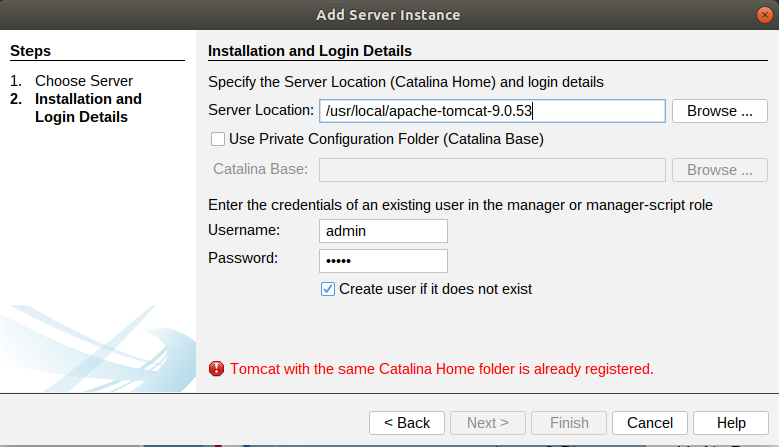
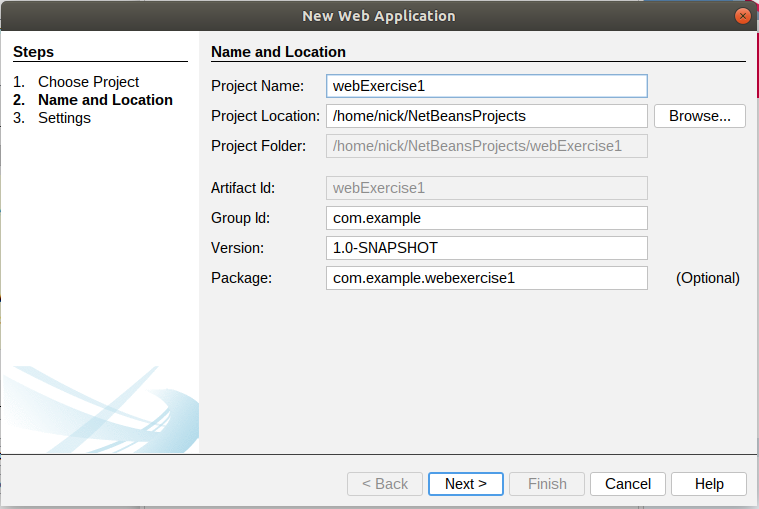
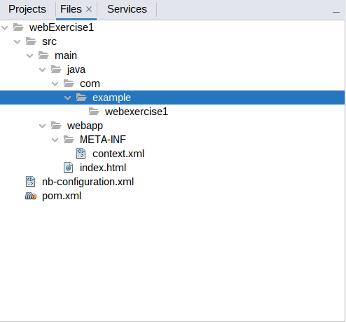
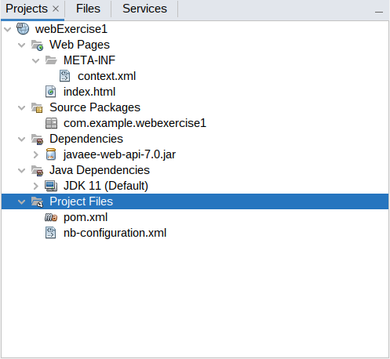
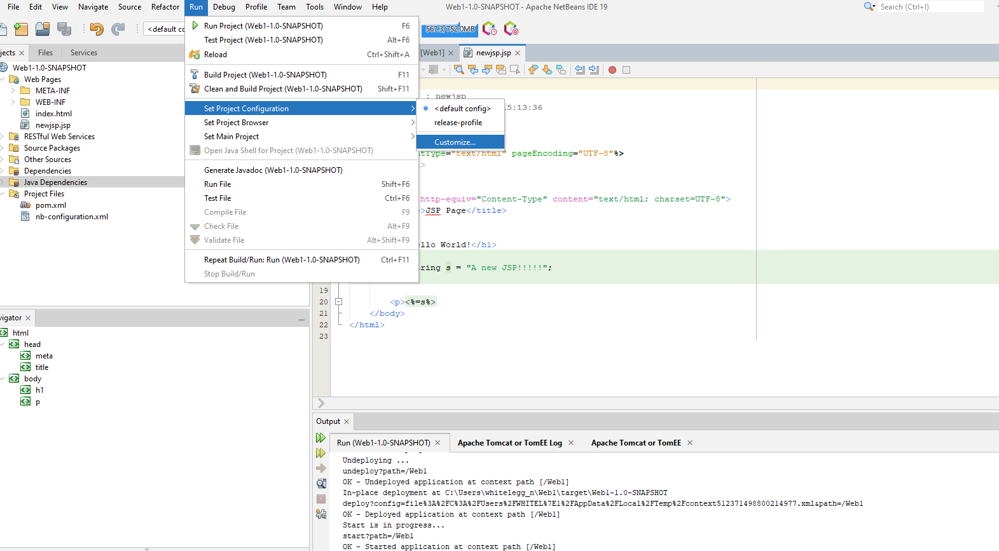
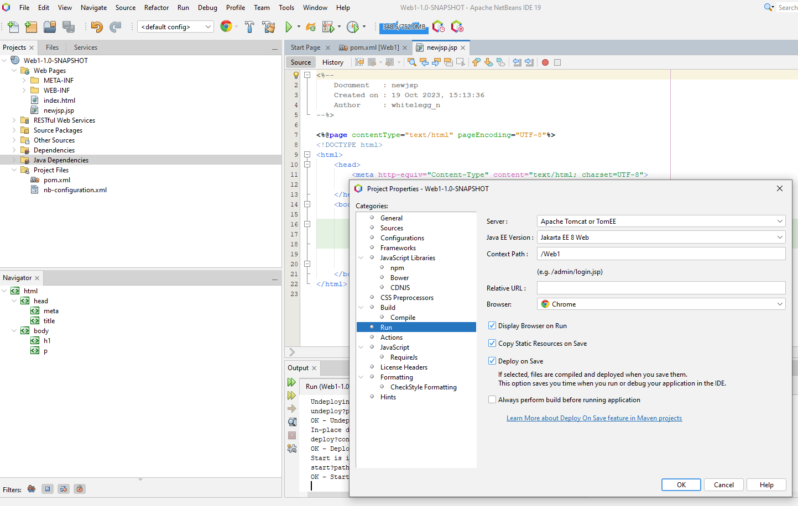

CREDIT: These notes are partly based on those originally prepared by Craig Gallen, a former lecturer at the university, but have been modified by myself.
In the first three weeks we looked at many of the fundamental features of Java. However real-world Java applications typically have a graphical front-end. In desktop applications we can use GUI toolkits such as Swing to create our front-end, or alternatively we can use the web and host our Java app on a server. Using the web has the advantage that a user can access our app via a web browser, the app has a familiar interface, and HTML (familiar to many people) can be used to create the front-end.
One of the oldest but still widely used Java web technologies is Java Server Pages or JSP. JSP allows you to create dynamic web applications using Java.
Static web pages (with a .html extension) contain unchanging content. This might be appropriate for certain simple scenarios (such as a personal home page, which is rarely updated) but in most cases we need dynamic web pages.
For example, we might wish to search for hotels in a particular city. We would type in the city name in a search box within an HTML page, and a page containing all the matching hotels would be generated. The hotels would probably be stored in a database, so the page would be generated based on the contents of the database.
For this, HTML on its own is inadequate, as it is simply a content-description language. It contains no logic, and contains no common programming features such as conditional statements (e.g. if) or loops.
What we need instead is a server-side language: a language which runs on a web server and dynamically generates content, depending on user input or the contents of a database. Many of you have already been introduced to node.js (with ejs templates) which is one very common server-side technology, using JavaScript.
Other languages can be used, such as PHP, Python, C# (with .NET), and Java. So, as this is a Java module, we will introduce the leading technology for server-side Java development: JSP (Java Server Pages).
Before we look at JSP, we will start by looking at the concept of clients and servers. This is essential to understand how the web works, and is certainly essential to understand how server-based applications work.
The web is a typical client/server system. When you are using a web browser, the browser is acting as a client. When you type in an address, you are making a request for a web page. This request is received by a web server running on the website's hardware (we will see shortly what this is), which sends the requested page back as a response.
Client/server communication over the web takes place via Hypertext Transfer Protocol or HTTP. HTTP is a set of instructions for sending messages across a network. Your browser sends the website an HTTP request for a web page, and the server software running on the website's hardware then responds with an HTTP response containing your requested page.
When the user enters the address in their browser e.g.
http://www.hittastic.com/about.htmlthe browser generates an HTTP request. This is an instruction to the web server to send back the requested page in a format that the web server understands. An HTTP request looks like this:
GET /about.html HTTP/1.1 Host: www.hittastic.comIt can be seen that we are requesting the page
about.html from the domain www.hittastic.com. (Potentially one server can host several domains, that is why we need the domain name). The instruction GET is known as the HTTP method; there are various types of HTTP method such as GET, POST, PUT, or DELETE. A request with a method of GET (called a GET request) is used when we are simply looking up a web page, rather than creating or modifying an existing page.
Once the website's server hardware receives the HTTP request, it is processed by server software continuously running on it. Server software continuuously listens to HTTP requests for a given page from clients, and delivers the appropriate page back as an HTTP response.
Examples of server software include:
The web server software interprets ("reads") the HTTP request from the client (the browser), and sends the requested page (or image, video, etc) back as an HTTP response.
The HTTP response looks like this:
HTTP/1.1 200 OK Date: Content-Type: text/html Content-Length: 4444 <!DOCTYPE ... > <html> <head> ... </head> <body> ... </body> </html>It consists of three parts:
HTTP/1.1 200 OK
Status codes indicate to the client whether the request was successful. The status code 200 OK indicates that the request was successful, however there are various error codes to indicate different kinds of error. These include:
Date: Fri, 31 Dec 1999 23:59:59 EEST Content-Type: text/html Content-Length: 4444
The HTTP response header consists of information about the response, including:
text/html, the MIME type for an HTML page, or
image/jpg, the MIME type for a JPEG image.text/html, it will know to interpret the response
as an HTML page, whereas if the MIME type is image/jpeg, it will
know to interpret the response as a JPEG image.
To summarise the operation of the web client/server system.
Having looked at clients and servers in general, we will now focus specifically on JSP.
To run JSP we need a web container: a specific type of web server designed for running Java web applications. The one we will use is Apache Tomcat. A Java web application server like Tomcat can serve a mixture of HTML and JSP pages and any other content such as images or CSS or JavaScript which form part of a page.
JSPs (Java Server Pages) are documents which contain a mixture of HTML and Java code. The Java code is used to dynamically generate the HTML which is returned to the client by the server for each web request. This is very similar to other web technologies such as Node.js with EJS, or PHP. One feature of JSP pages is that instead of being interpreted each time they are called, JSPs are compiled into pure Java code (which contains Java statements to generate HTML and send it back to the client) when they are first requested and cached for later use. This means that subsequent requests to a JSP page are very fast.
The diagram below (produced by Craig, and modified by myself) shows the architecture of a Web Container which hosts JSPs. A Web Container allows multiple Web Applications to coexist on the same server. Each web application is contained in a zip file called a Web Application Resource file with the suffix .war.
A .war file contains static web resources (such as index.html or CSS files), dynamic web resources (JSPs) and an XML file, describing the whole application, called web.xml. It may also contain a number of precompiled classes (.class files) and/or a /lib directory which can contain JAR files (Java library files) containing third-party components. The contents, libraries and class path of each war are treated completely independently by the web container.

As we have seen, each page contains a mix of HTML and Java.
When a JSP is first accessed, the web container converts it 'on the fly' to a pure Java file called a servlet (class HttpServlet) which is then compiled into a runnable class. As we saw above the servlet is cached to speed up subsequent requests.
The servlet is given access to a session object (which we will cover next week) and a request object (class ServletRequest). The session object lasts for the duration of the session i.e. from the first request until the browser session is closed down or times out. Session objects are used to store objects which will be used across multiple page requests. The request object contains the parameters of the HTTP request and is used by the code in the JSP to create a response.
The servlet is expected to return a response object which will contain the correctly coded HTML web page to be returned to the client browser.
Many web application servers are available including Apache Tomcat http://Tomcat.apache.org/ and Eclipse jetty https://www.eclipse.org/jetty/
In theory war files should be interchangeable between application servers and work just as well. Unfortunately there are subtle differences between servers in the web.xml and other configuration files so each war needs to be targeted to a particular server. In our project we will be using Apache Tomcat as our application server.
Before we can have a play with JSP's we need to install the Tomcat server in your Netbeans environment. Tomcat and Netbeans are installed in your university machine but they are not linked. You need to supply the link to your own account.
CATALINA_HOME directory; ensure you set this up as an environment variable, see presentation on SOL) on your machine.
If you are on a university machine, the base directory for Tomcat (CATALINA_HOME is C:\devel\Tomcat\apache_tomcat_10.0.22). This is where Tomcat code is installed. So, in the dialog above, you should enter this directory in the Specify the Server Location (Catalina Home) text box:
C:\devel\Tomcat\apache_tomcat_10.0.22
Also, create a Tomcat user (as shown above):
username admin password admin
On the University machines (but not on your own personal machine) you need to supply a default working directory CATALINA_BASE for which you have write permissions so that you can start and use Tomcat from Netbeans. (You will not have permission to write to the CATALINA_HOME directory). The difference between CATALINA_HOME and CATALINA_BASE is explained here.
Set the CATALINA_BASE to C:\Users\YOUR USER NAME\catalinabase (you will need to create this folder first as an empty folder). Then, select finish, and you should see a new server show up under the list of servers.
You will also need to change the shutdown port on the university machines. This is the port used to shutdown Tomcat, but unfortunately the default port (8005) is used for something else. To do this select Tools-Servers-Shutdown Port and change 8005 to 8006.
Now right click on Servers > 'Apache Tomcat or TomEE' and select Start. This will start Tomcat, which will be running on port 8080. So, you should be able to visit a Tomcat generated web page in your browser at http://localhost:8080/
If you explore your CATALINA_BASE folder you will see that Tomcat creates intermediate files for your application, for example, full Java servlet code generated from your JSP.
The .war file for your application, however, lives in your Netbeans project directory, within the target subdirectory.
This was partly created by Craig Gallen, but has been modified.
In this exercise we will use Netbeans to create a new empty Maven Web Application project which we will use to explore JSPs.
a) select file > new Project > Java with Maven > Web Application
b) Select where you will create the project. Again, OneDrive is recommended.
c) Fill in the project details as shown in the screenshot below, but change the Project Location to something appropriate (e.g. in your OneDrive).
The groupId and the artifactId uniquely identify the project within a maven repository. Usually the groupId contains a name space associated with your organisation or project (typically the domain name of your organisation, reversed). You can see that Netbeans automatically creates a Java package using the group ID and artifact ID.

d) click next and accept the default options for Tomcat and JavaEE

If all goes well, you should now have a new project created in the location you specified and visible in the Netbeans IDE.Every Maven project follows the same conventions for laying out a project but each IDE may display this information differently. It is important to know where your files really are located in your project and how the IDE is displaying them.
Netbeans provides two views of projects; A project view and a files view
The Files view shows you exactly where each part of the project is created and stored on your computer. You can see that the Java classes are stored in a nested tree of folders corresponding to the package name of each class.

The Project View does not show the exact folder structure, but instead groups your project by component type. It can make it a bit easier to navigate around the logical layout of the project. You can see that the source tree is collapsed into a package under Source Packages. This contains your Java code.

The layout is a little different. For instance in the project view you will see a folder labelled Web Pages.
In the Files view this is actually held in the /src/main/webapp folder.
Similarly the pom.xml (Maven configuration) file is in the root of your project but is displated under Project Files in Netbeans.
If using a more recent version of Java than Java 11 (e.g. Java 17) you need to change the version of one of the dependencies, as the default version is not compatible with newer versions of Java. You may need to do this on the university computers. In pom.xml, find the <plugin> tag referring to maven-war-plugin and change the version to 3.3.1 (it will probably be 2.3 by default):
<plugin> <groupId>org.apache.maven.plugins</groupId> <artifactId>maven-war-plugin</artifactId> <version>3.3.1</version> <!-- change this --> <configuration> <failOnMissingWebXml>false</failOnMissingWebXml> </configuration> </plugin>
META-INF or WEB-INF folders is used by the web server but cannot be directly accessed using a web request.For example, the META-INF/context.xml file tells the server what the root of our web application will be.
<?xml version="1.0" encoding="UTF-8"?>
<Context path="/webExercise1"/>
This tells the server that this web app will be available at http://localhost:8080/webExercise1. The server will always serve any file called index.html as an entry page to our application so
http://localhost:8080/webExercise1will be the same as
http://localhost:8080/webExercise1/index.html
To run the application, right click on the webExercise1 project and select 'run':

The log output will tell you that Tomcat is starting up and that the application is being deployed to Tomcat. Once deployed, the application will be available at:
http://localhost:8080/webExercise1/index.htmlYou should see a 'hello world' page on your web browser. Netbeans opens your web browser and sends a request to Tomcat for the page.
On the university computers you may have a problem as it will try and open Internet Explorer (which no longer exists) as the browser. You can however change the browser to use your application. Select Run-Set Project Configuration-Customise as shown below:

Then select Run and a dialog similar to the one shown below will appear, allowing you to specify which browser to use to test your application.

Once you've run it, if you look at the Tomcat tab under services you will see your application is deployed.

Finally, you can undeploy your application by right clicking on your project name and selecting 'clean'.
We have seen how the application handles simple HTML. Now we will create a simple JSP page. Right click on Web Pages and select add JSP and name the file newjsp

You should see a newjsp.jsp page with the following content.
<%@page contentType="text/html" pageEncoding="UTF-8"%>
<!DOCTYPE html>
<html>
<head>
<meta http-equiv="Content-Type" content="text/html; charset=UTF-8">
<title>JSP Page</title>
</head>
<body>
<h1>Hello World!</h1>
</body>
</html>
You can view this page by browsing to:
http://localhost:8080/webExercise1/newjsp.jspYou will see that the JSP looks very like a simple HTML file with the only difference being the
@page directive line.
In fact you can turn any HTML page into a JSP by changing its suffix to .jsp and adding the @page directive line.
We mentioned that JSPs mix Java code with html. Add the following lines so that the page looks like the example below and refresh your browser.
<%@page contentType="text/html" pageEncoding="UTF-8"%>
<%@ page import="java.util.Date" %>
<!DOCTYPE html>
<html>
<head>
<meta http-equiv="Content-Type" content="text/html; charset=UTF-8">
<title>JSP Page</title>
</head>
<body>
<h1>Hello World!</h1>
<p>the time is <%= new Date() %> </p>
</body>
</html>
Note that:
<% and %> are escape characters which indicate the intervening lines are JSP specific and are not included in the generated HTML. Usually we write Java code between these characters in a JSP page.<%= %> directive tells the server that Java code between the <%= %> will produce a string to include in the page.<%@ page import="java.util.Date" %>directive imports a class (in this case java.util.Date) in a similar way to the Java import directive in a normal Java class file.
Modify the JSP page from the previous exercise and add this line, below the line which displays the time.
<%
String fName = request.getParameter("firstName");
%>
<p>Hello <strong> <%=fName %></strong></p>
What is this doing? request is a global variable within the JSP which is an object representing the HTTP request coming in from a client. The getParameter() method of the request object retrieves a named parameter called firstName, sent from the client. We save it in a variable called fName. We then leave JSP, go into plain HTML again, before re-entering JSP to display the variable fName with strong highlighting.
How can you send this parameter to a JSP? There are several ways. The simplest way is to append the parameter to the end of the URL as a query string.
After re-compiling and deploying your revised application, alter the URL in the browser to:
http://localhost:8080/webExercise1/newjsp.jsp?firstName=John
It should greet you by name, e.g:
Hello John
More commonly, a user would enter a parameter via a form. For example, they might enter a search term via a form. Create a new HTML form (testform.html) in your project and add the following to it:
<!DOCTYPE html>
<html>
<head>
<meta http-equiv="Content-Type" content="text/html; charset=UTF-8">
<title>JSP Example 2</title>
</head>
<body>
<h1>JSP Example 2: Form Request Examples</h1>
<!-- starting the href with ./ means you are referring relative to the root of this page -->
<form action="./newjsp.jsp" method="get">
<p>Please enter your name:<input type="text" name="firstName" value="" /></p>
<input type="submit" value="Send to JSP!" />
</form>
<br />
</body>
</html>
This HTML page allows the user to enter their name via an HTML form. Note how the form has one field with a name of firstName. Note how this corresponds to the parameter we are reading in the JSP, i.e.:
request.getParameter("firstName");
Note also the form has an action of newjsp.jsp, implying that the form details will be sent to that JSP page (the one we have written already).
Try it out by entering the following URL in your browser:
http://localhost:8080/webExercise1/testform.html
Enter your name in the form and click the button. You should find that you are greeted with your name once again. You will also notice that the name once again gets appended to the URL as a query string. This is because the data is sent via a type of HTTP request called a GET request (commonly used for searches), and GET requests append the form data to the URL as parameters.
We can enhance the previous example so that the form and JSP are contained on the same page, so that the form submits to itself. Create a new JSP called selfsubmitting.jsp and add it to your project.
<%@page contentType="text/html" pageEncoding="UTF-8"%>
<!DOCTYPE html>
<html>
<head>
<meta http-equiv="Content-Type" content="text/html; charset=UTF-8">
<title>JSP Example 2</title>
</head>
<body>
<h1>JSP Example 2: Form Request Examples</h1>
<%
String fName = request.getParameter("firstName");
// Was a parameter submitted? If so, the parameter will be non-null
if (fName != null)
{
%>
<p>Hello <%=fName %> !</p>
<p><a href='./selfsubmitting.jsp'>Go back to form</a></p>
<%
}
else
{
%>
<form action="./selfsubmitting.jsp" method="get">
<p>Please enter your name:<input type="text" name="firstName" value="" /></p>
<input type="submit" value="Send to JSP!" />
</form>
<br />
<%
}
%>
</body>
</html>
You can access it via:
http://localhost:8080/webExercise1/selfsubmitting.jspNote how, in this example, we try to read in the parameter
firstName. If it exists, we know it's been sent to the JSP so we greet the user. If it does not, it will be null, so we display the form to allow the user to enter it. Note also how we display a link to return the user to the form after greeting them. This will send a request to selfsubmitting.jsp without the firstName parameter, therefore it will display the form again.
Write an application (in a brand new project) containing a form allowing a user to enter student details (name, course, and mark). The data should be sent to a JSP which reads the details and displays them.
Use this form. You'll note that the form's method is now post. You should use post when data might be updated or when sensitive data is sent to the server. This creates an HTTP POST request; the form data is embedded within the HTTP request rather than being appended to the URL as a query string. However, in the JSP you read the form data in the same way, using request.getParameter().
<!DOCTYPE html>
<html>
<head>
<meta http-equiv="Content-Type" content="text/html; charset=UTF-8">
<title>Add a student</title>
</head>
<body>
<h1>Add a student record</h1>
<form action="./FILL_THIS_IN" method="post">
<p>Student name:<input type="text" name="studentName" value="" /></p>
<p>Student course:<input type="text" name="studentCourse" value="" /></p>
<p>Student mark:<input type="text" name="studentMark" value="" /></p>
<p>Student type:
<select name='studentType'>
<option>Undergraduate</option>
<option>Masters</option>
</select>
</p>
<input type="submit" value="Register student!" />
</form>
<br />
</body>
</html>
Student class from weeks 2 and 3 into your project (plus the Undergraduate and Masters classes if you got that far). In the JSP, create a Student object using the data read in. Initially, ignore the student type (just assume the student will be an Undergraduate if you completed the inheritance hierarchy).
Student class to the java folder within your project's hierarchy, as shown below with Cat.java:
com.example.webexercise1 here), e.g
<%@page import="com.example.webexercise1.Cat" %>If you encounter problems, try doing Clean and Build on your project (right-click on the project name).
printDetails() method be used to output the student data on the JSP? Can you now see the general problem with classes representing the application's data including code to write to, and read from, the console?toString() instead. This should return the same data that is printed out with the printDetails() method, Can this be used in both a console application and a JSP?toString() method.setMark() has a similar problem, in that if the mark is invalid, it displays an error message to the console. How can you modify it so that a JSP is able to output the error to the user?studentType drop-down list.